Friday · History
(1919): Shandong, a student march, and a treaty China would not sign
Beijing students marched on 4 May 1919 after Paris awarded German rights in Shandong to Japan. Strikes and boycotts followed. The Beiyang cabinet dismissed three officials. Chinese delegates left unsigned.
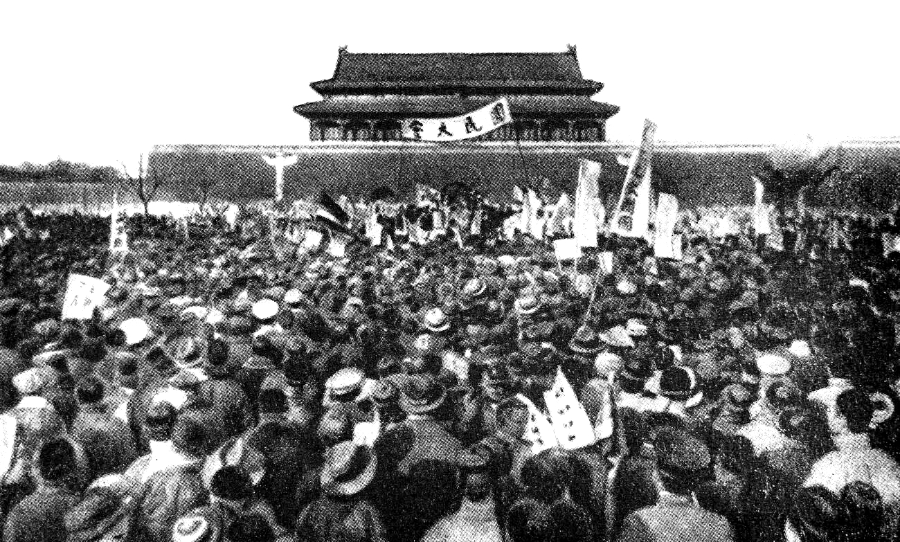
.jpg){kind=link}
names a day and a wider season. The political movement of May–June 1919 (Shandong, strikes, the unsigned treaty) sits beside the that had already been arguing in magazines since 1915. This capsule keeps those two threads distinct and does not treat every later use of “ spirit” as the same event. Casualty and crowd figures that cannot be sourced here are omitted. The earlier capsule is named only as background; the capsule is later.
Select any words, or tap a dotted term.
- 1915 Twenty-One Demands / New Youth Japan presented the to ’s government. In Shanghai, launched , soon retitled ( / ).
- 1917 China enters the war The declared war on Germany. Chinese labourers went to Europe in the . ’s gathered , , and others.
- 1918 Armistice / secret notes The war in Europe ended. Japan already held German positions in Shandong taken in 1914. Sino-Japanese notes and loans under ’s kept Shandong entangled with Tokyo’s wartime leverage.
- 18 Jan 1919 Paris opens The began. Chinese delegates, including and (), argued for the return of Shandong.
- 30 Apr 1919 Shandong to Japan The settled German rights in Shandong on Japan. News reached Beijing as a public humiliation of an Allied co-belligerent that had expected restitution.
- 4 May 1919 Tiananmen Students marched from Tiananmen toward the , then to ’s house at . The house was set on fire; was beaten. Arrests followed.
- 3–5 Jun 1919 Mass arrests Beijing police arrested large numbers of students. photographed students taken into custody on 4 June. The crackdown widened the movement beyond campus.
- 5–12 Jun 1919 Shanghai strikes Merchants, workers, and students in Shanghai and other cities joined strikes and a boycott of Japanese goods. The commercial center, not only Beijing classrooms, now held the government’s attention.
- 10 Jun 1919 Three dismissed President ’s government dismissed , , and —the three officials students had branded traitors.
- 28 Jun 1919 No Chinese signature At , the Chinese delegation refused to sign the . Japan still held Shandong for the moment; the refusal was a diplomatic fact forced by domestic pressure.
- 1921–22 Washington At the , Japan agreed to return Shandong leasehold rights to China under arrangements concluded in 1922. The 1919 street fight had not ended Japanese presence; it had kept the file open.
Before
A magazine war on classical prose, and a province already under Japanese guns
By 1919 the Qing had been gone for eight years, but the republic that replaced it had not settled who ruled. was dead. Provincial armies bargained and fought. The internationally recognized government sat in Beijing and still had to borrow, still had to answer foreign ministries, and still lived with the unequal treaties the Qing had signed. Students who had grown up reading about the 1911 Revolution now watched cabinets rotate under warlord pressure. The earlier capsule on the ends with that bargain: a dynasty gone, an army still in charge. begins further down the same road.
The Beiyang Army that Yuan had built had split into cliques. ’s Anhui faction used Japanese money and munitions during the World War and left a paper trail students could quote. When cabinets changed, the Shandong file and the loan file did not vanish. Readers of Shanghai and Beijing papers in 1918–19 already knew the names and as men who handled Japan-facing business for the state. The 4 May crowd did not invent those names from rumor alone.
Japan had taken Germany’s positions in Shandong in 1914, early in the World War. In 1915 Tokyo presented the to Yuan’s government. Chinese public memory kept that file open. During the war, ’s took Japanese loans—the among them—that critics read as selling leverage over railways and Shandong-related interests. When China entered the war against Germany in 1917, the wager was explicit: Allied victory should mean the return of German rights in China to China. Chinese labourers in the went to Europe on that implicit promise.
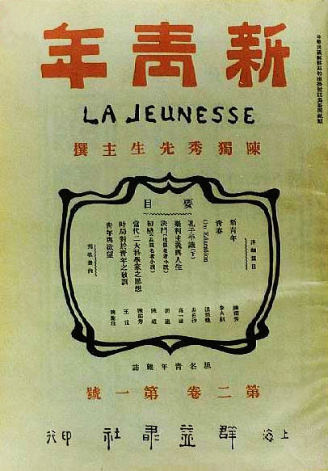
{kind=link}
At the same time a different fight was underway in Chinese print. In 1915 founded in Shanghai and soon renamed it . The magazine attacked classical as a dead circuit for modern argument, promoted , and borrowed the nicknames “” and “.” , chancellor of , hired Chen as a dean, brought back from American study to teach, and kept in the library. ’s “” appeared in in 1918. None of that was yet a street movement. It was a faculty and a subscriber list teaching readers to distrust inherited authority—including the authority that would soon sign, or refuse to sign, a European peace.
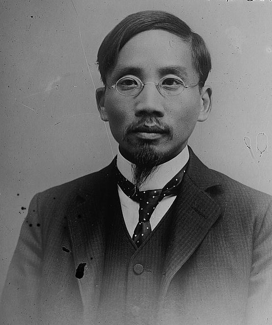
{kind=link}
The era
Paris gave Shandong to Japan; Beijing answered in the street
The opened in January 1919. China’s delegation— at its head, with among the eloquent younger diplomats—asked for the return of German rights in Shandong and for relief from the broader unequal order. Japan arrived with wartime seizures and with Allied secret understandings already in hand. On 30 April 1919 the awarded German privileges in Shandong to Japan. ’s public language about self-determination did not cover this file. The news hit Beijing as betrayal: China had joined the Allies and sent labourers; the peace still transferred a Chinese province’s stolen leases to another empire.
{kind=link}
On the afternoon of 4 May, about three thousand students from thirteen Beijing schools gathered at Tiananmen. Slogans demanded external sovereignty and the removal of “national traitors” at home—, , and . The march moved toward the and was stopped; geography still made that district a foreign-policed island. The crowd then went to ’s house at . The house was set on fire. , found there, was beaten. Police arrested students. Within days the protest was no longer only a story. Telegrams, newspapers, and student unions carried it to Tianjin, Shanghai, and provincial cities.
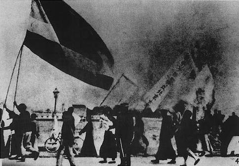
.jpg){kind=link}
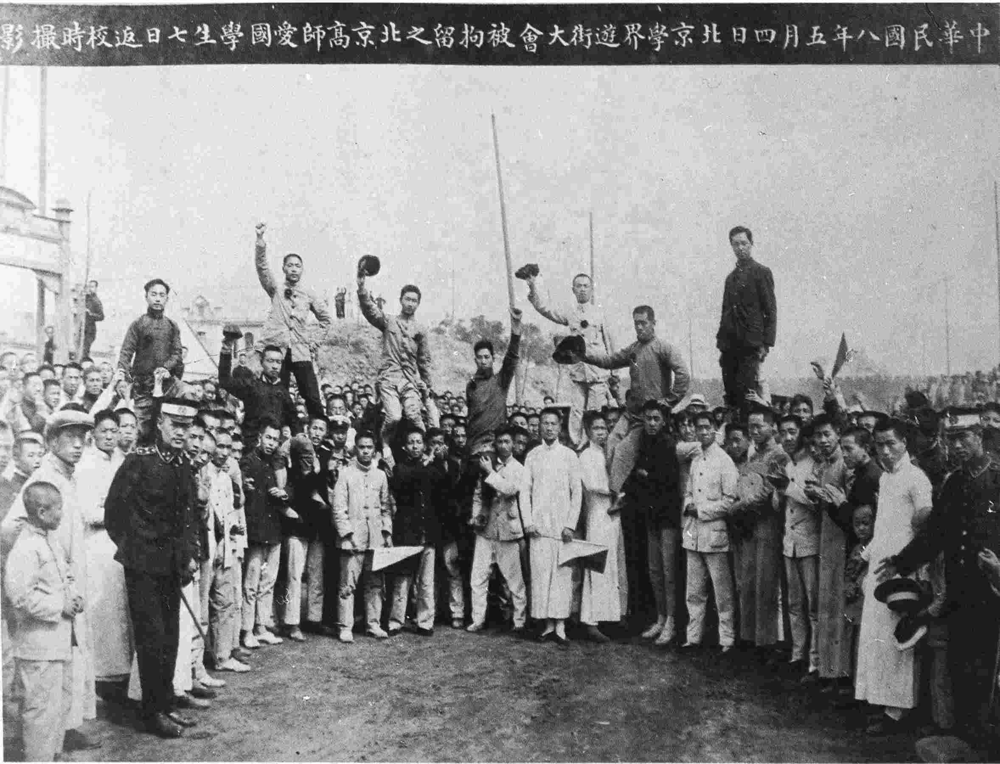
{kind=link}
Early June raised the cost. On 3–5 June Beijing authorities arrested students in large numbers. , photographing for social-survey work, recorded students taken into custody on 4 June. The arrests did not end the movement. They advertised it. In Shanghai, merchants closed shops, workers struck, and students stayed out of class—the “three strikes” that turned a capital demonstration into a national commercial emergency. Boycotts of Japanese goods spread; at , students burned Japanese merchandise in a courtyard bonfire that was itself photographed as politics.
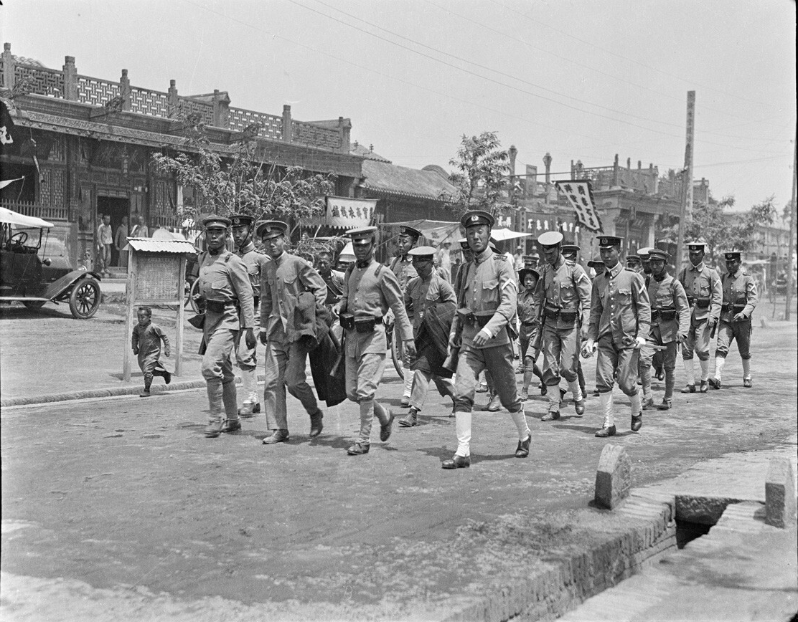
{kind=link}
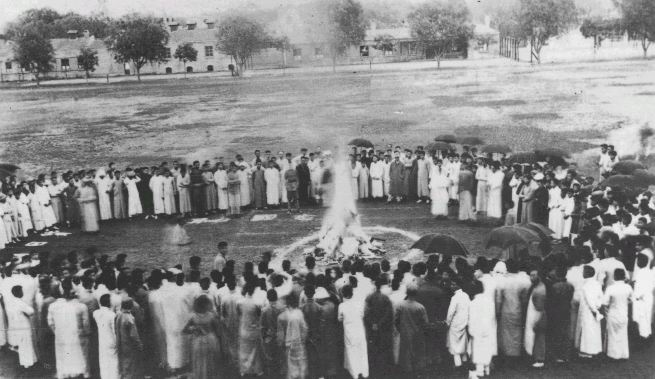
{kind=link}
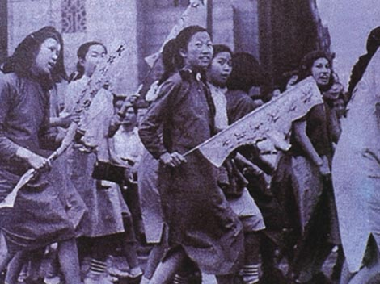
{kind=link}
On 10 June the dismissed , , and . Strikes eased because the named domestic targets had fallen. The Shandong clause in the draft treaty did not disappear. What remained was the signature. Chinese students and workers in France surrounded the delegation with petitions and threats of shame. On 28 June 1919, when other Allied representatives signed in the Hall of Mirrors, the Chinese delegates did not. Japan still occupied the leaseholds and would for three more years. The refusal was nonetheless a diplomatic fact produced by a domestic movement that had begun with a student march two months earlier and had learned, in Shanghai especially, how to close a city.
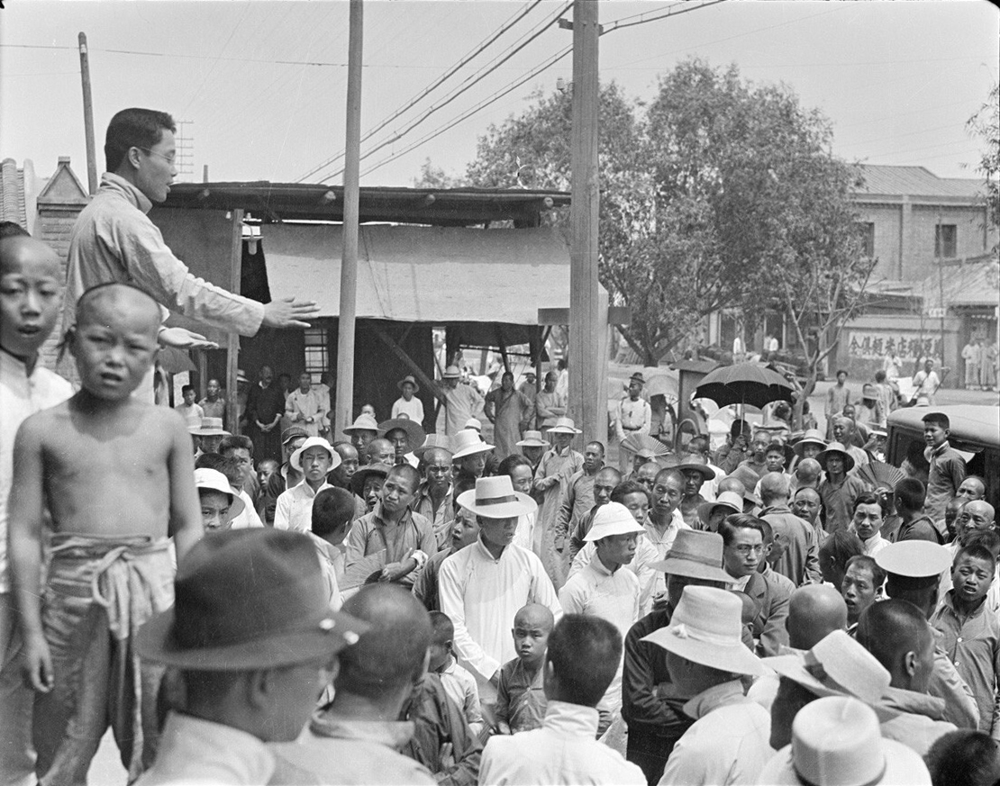
{kind=link}
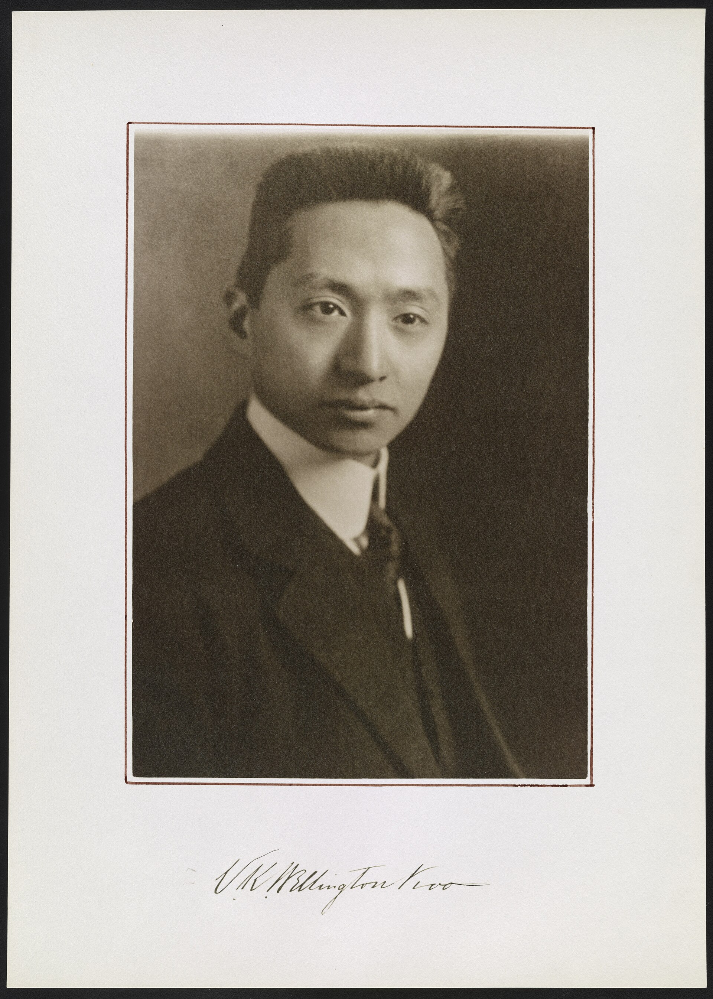
{kind=link}
How it showed up
Editors, a vernacular, and three careers that outlived the march
is often taught as if the magazine and the march were one thing. They were neighbors. had already spent years telling young readers to drop classical habits. had already published the case for . had already put cannibalism into as a judgment on ritual culture. On 4 May, student organizers such as and turned that trained anger toward a specific diplomatic text and three named officials. The “how it showed up” is concrete: telegrams, school unions, shop closures, bonfires of imports, and a foreign ministry that discovered it could not sign in peace.
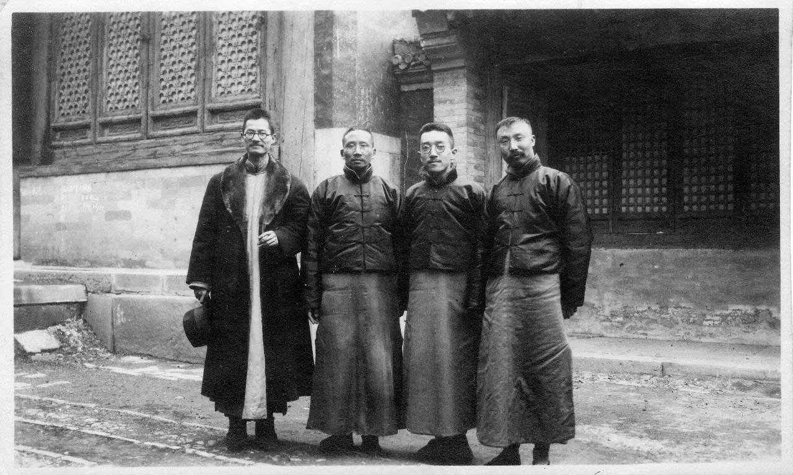
{kind=link}
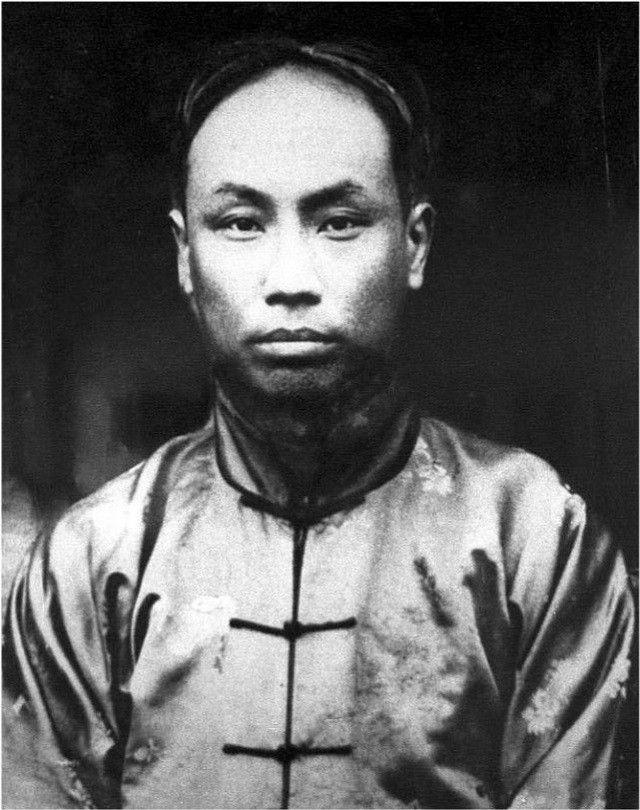
Chen Duxiu 陈独秀
1879–1942
Anhui-born essayist and editor who founded and turned it into the decade’s loudest Chinese magazine of reform. At he held a dean’s post under . He was not the field marshal of the 4 May march; he was the man whose pages had already taught students to treat Confucius, classical prose, and meek diplomacy as problems with names. After 1919 he moved into Marxism and helped found the in 1921, then lost that leadership in the later 1920s. For this capsule he matters as the editor who made “” and “” portable slogans.
as a young man. The face of ’s masthead long before he became a party founder.Wikimedia Commons / public domain
{kind=link}
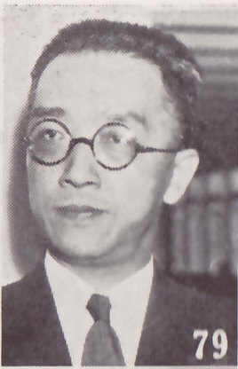
Hu Shi 胡适
1891–1962
Educated in part in the United States, Hu returned to as a professor and argued that China needed literature and argument in the language people spoke. His essays for made a program, not a taste. He was photographed in 1920 with and ; he was not a street fighter of 4 May. His later career—diplomacy, scholarship, Taiwan academic leadership—belongs to After. Here he is the reason a political crisis arrived in a reading public already primed to distrust classical authority.
(). The vernacular program’s most cited advocate among the faculty.Wikimedia Commons / public domain
{kind=link}
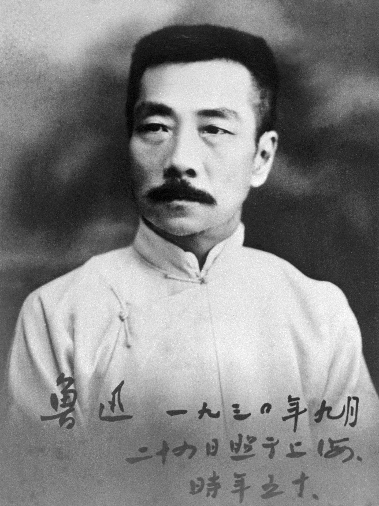
Lu Xun 鲁迅
1881–1936
wrote under the name . “,” published in in 1918, used vernacular fiction to accuse ritual China of eating its young. He was in Beijing during the years and became the movement’s most durable literary name, though he did not command the Tiananmen column. Read him here as evidence that ’s “culture” had already produced a style—cold, concrete, anti-ceremonial—before the Shandong telegram arrived.
, 1930. A later portrait than 1918–19; the writer readers already knew from “.”Wikimedia Commons / public domain
{kind=link}
Diplomacy had its own cast. argued Shandong as a legal and moral claim in Paris. headed a delegation that finally withheld the signature. ’s presidency dismissed the three officials when Shanghai’s strikes made academic arrests look cheap. The movement’s power was not that students invented foreign policy. It was that they could raise the domestic price of accepting a humiliating clause until the foreign ministry blinked.
Same time elsewhere
Korea’s March First, India’s Amritsar spring, and a peace that redistributed colonies
was not China’s private quarrel with a map. In March 1919, two months earlier, Koreans had launched the against Japanese colonial rule—mass readings of a declaration of independence, protests in Seoul and the provinces, and a Japanese crackdown that filled prisons. Chinese students reading about Shandong already knew Japan as an empire with a Korean colony next door. The same spring’s imperial police problem had more than one address.
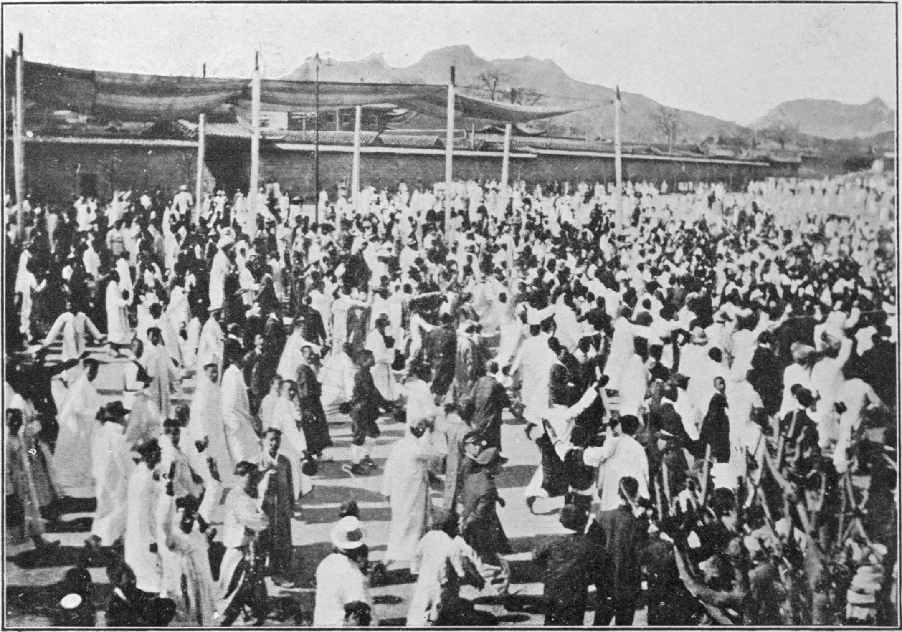
{kind=link}
In India, 13 April 1919 brought the at Amritsar: troops under Brigadier-General fired on a crowd gathered in an enclosed garden, killing hundreds. The shooting followed agitation against the ’s emergency powers. Egypt’s 1919 revolution against the British protectorate filled the same months with strikes, petitions, and rural unrest. Paris spoke about nationality in the conference halls; several empires answered mass politics with ordinances and rifles in cities they still administered.
Inside Europe the German treaty redistributed colonies and borderlands while revolutions and republics scrambled the map. Chinese newspapers followed as both a European settlement and a test of whether “China among the Allies” meant anything. The unsigned Chinese page is easier to understand when set beside Korea’s March protests and India’s Amritsar spring: different empires, same year, publics that refused to treat the peace as a closed file.
After
Vernacular stuck; parties formed; Shandong returned on paper in 1922
did not retreat when the strikes ended. Schoolbooks, newspapers, and fiction increasingly used the vernacular had championed. “” became a label for a generation and a style of cultural politics, sometimes stretched far beyond May–June 1919. That stretch is historical fact and also a risk: later parties and textbooks drafted the day for their own lineages.
Student unions and commercial boycott habits outlasted June. So did a sharper split among intellectuals who had shared pages. The question was no longer only classical versus vernacular. It was which organization could claim the nationalist public had revealed—party cells, liberal associations, or the reconstituted . That fight fills the 1920s; this capsule only marks the fork.
Organizationally the aftermath split. Some New Culture figures moved toward Marxism; and helped found the in 1921. Others stayed with liberal reform, scholarship, or the reorganized under ’s last years. The warlord map did not vanish. What changed was the available public: students, merchants, and workers had practiced a national boycott and watched a cabinet dismiss officials under pressure.
Shandong’s legal status shifted again at the of . Japan agreed to arrangements returning the former German leasehold rights to China in 1922. That settlement did not cancel Japanese power in the region for all time—the later capsule begins from a longer Japanese advance—but it closed the specific 1919 clause that students had marched against. The street had not expelled Japanese forces in June 1919. It had kept Chinese refusal audible until another conference rewrote the paper.
A question
A question to keep asking
If a student march could stop a signature but not immediately empty Japanese barracks in Shandong, what exactly did win—and who got to inherit that win in the decades that followed?
Fun fact
The Chinese Labour Corps had already paid in Europe
China’s claim at Paris rested partly on wartime service: tens of thousands of Chinese labourers worked behind Allied lines in France and elsewhere under the . The Shandong decision treated that contribution as irrelevant to German leaseholds Japan had seized in 1914. Students in Beijing were not inventing a grievance from a newspaper alone; they were answering a settlement that ignored a labour army China had already sent.